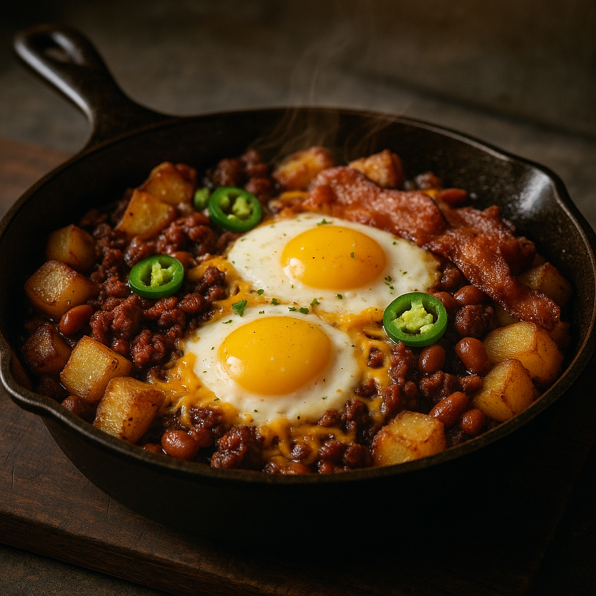
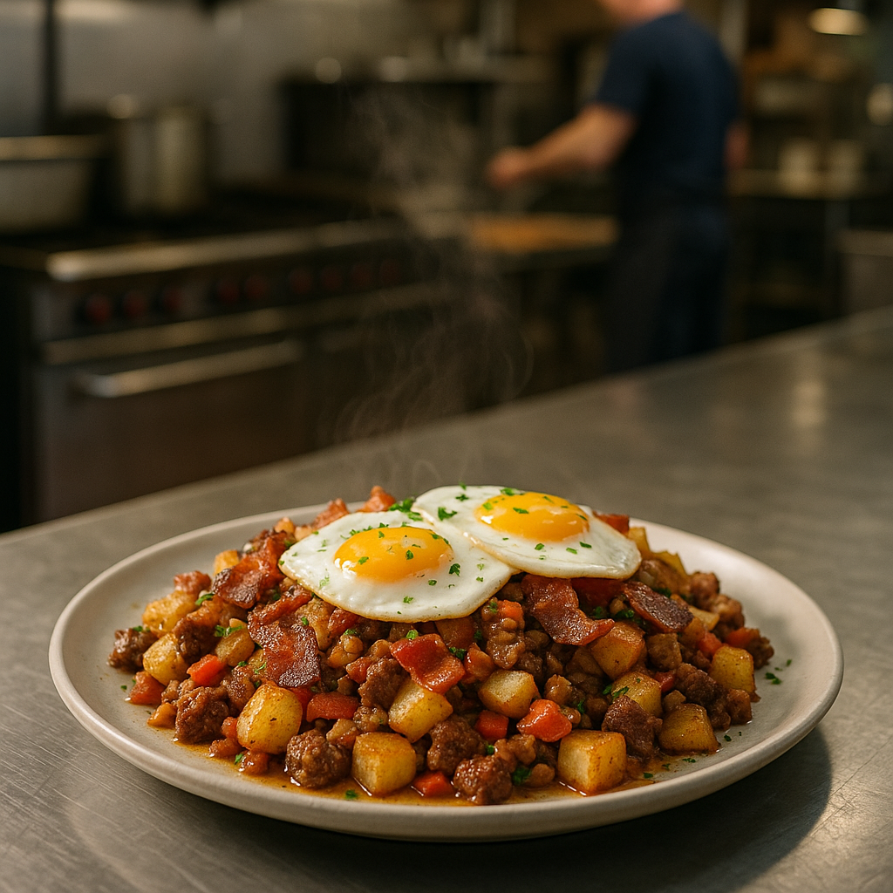

Sunday Morning · Kitchen Table Tradition
A firehall breakfast staple passed down through generations.

Red Lead is the tomato sauce. In halls that still run a proper Sunday breakfast, the senior cook’s cast iron carries a slow-simmered red sauce to the center of the table — not steak, not cracked eggs in the pan, and not a grab-and-go plate.
Firefighters make it because the sauce anchors a full spread: bacon, sausage, eggs, toast, hash browns, and orange juice served alongside while the crew actually sits down together. This card is the sauce recipe only.
Tomato Red Lead sauce — scale for your crew. Cook bacon, sausage, eggs, toast, and potatoes separately.
Beginner-friendly hall workflow — read once before you touch the range.
Red Lead is the tomato pan — not the whole meal. Put bacon in the oven, sausage links on a sheet pan, coffee on, and toast ready before you dice the onion. The sauce needs a calm simmer, not a rushed boil while the crew is still hunting for plates.
Common mistake: Starting the sauce first and letting it scorch while you scramble to cook everything else.
Set a 12-inch cast iron over medium heat. Melt the butter until it foams and smells nutty — not brown. Add the diced onion (and bell pepper if your hall uses it). Stir every minute or so until the onion turns soft and translucent with light gold at the edges.
Common mistake: Cranking heat to “speed it up” — butter burns and the sauce tastes bitter.
If using garlic, stir it in for 45 seconds until fragrant — not brown. Pour in crushed tomatoes, tomato juice, tomato paste if your hall adds a spoon for body, salt, and pepper. Stir until the red is even and the pan looks like thick soup.
Drop heat to medium-low. Simmer with the pan uncovered, stirring every few minutes so the bottom does not stick. The sauce is ready when it coats a spoon and a drag through the middle leaves a brief trail that slowly fills in.
Common mistake: Covering too early — steam keeps it watery. Uncovered simmer builds body.
Taste for salt and pepper. Add the pinch of sugar only if the tomatoes are sharp. For service, hold the pan on the lowest steady heat or transfer to a warm oven (170°F / 75°C) with foil on top. Sauce should stay above 140°F (60°C) for food safety.
Place the cast iron in the center of the spread. Bacon, sausage, eggs, toast, hash browns, and juice stay in their own platters. The crew serves themselves from the Red Lead pan with a spoon while everything else passes around it.
Common mistake: Plating Red Lead to-go — it is hall table food, meant to be shared from the pan.
Red Lead is almost never eaten on its own. It is one proud pan in a large Sunday-style spread — the breakfast is as much about crew camaraderie as it is about the food.
Red Lead sauce — center of the table.

Sides served separately around the sauce.
Sheet-pan at 400°F (205°C) until crisp; refill the platter.
Links in the oven or bulk crumbled on the griddle.
Scrambled in a hotel pan or fried to order — separate from the sauce.
Thick bread, butter and jam on the table.
On the griddle or oven — not mixed into the Red Lead pan.
Pitcher on the table; refill without being asked.
Simmer the sauce the night before, cool quickly, and refrigerate. Reheat in cast iron over medium-low with a splash of tomato juice — stir until glossy again. Do not microwave the whole pan if you can avoid it.
Use the 4 / 8 / 12 scaling on page 2. For two pans, split onion and tomato evenly — never double depth in one skillet or the center stays cold while the edges scorch.
Hold at 140°F (60°C) or above on the range’s lowest flame or in a 170°F (75°C) oven. Stir before service. If the sauce skin over, fold it back in — do not scrape burnt pan bottom into the sauce.
A well-seasoned 12-inch skillet is the standard. Larger crews use two pans or a 15-inch lodge — same technique, more surface for evaporation.
Boiling hard (splits the tomato and makes it grainy), under-salting until the table adds hot sauce, and confusing Red Lead with the steak skillet some halls also call by the same name — this card is tomato sauce only.
250+ crew-tested firehall recipes · Meal generator · Breakfast catalog